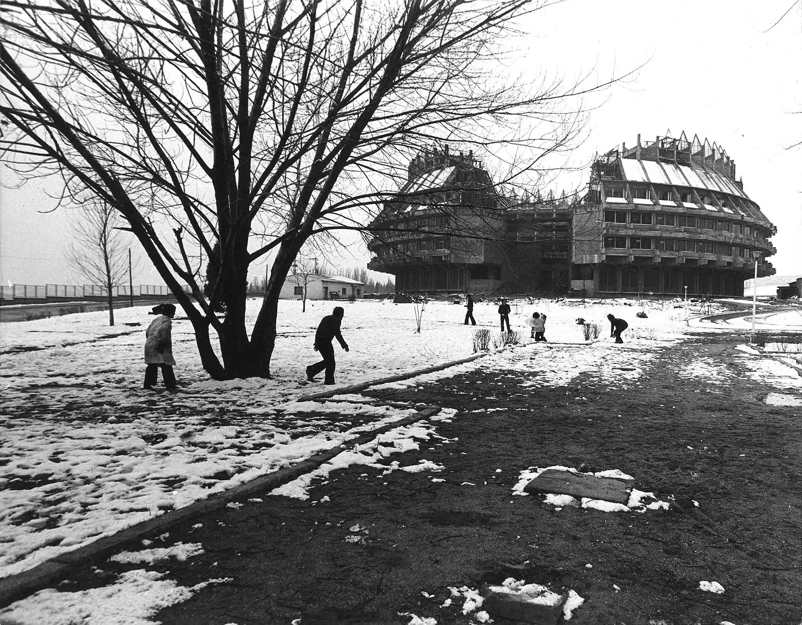
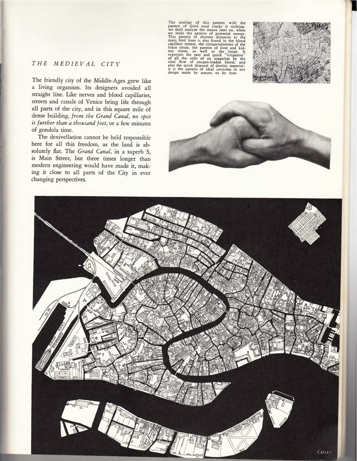
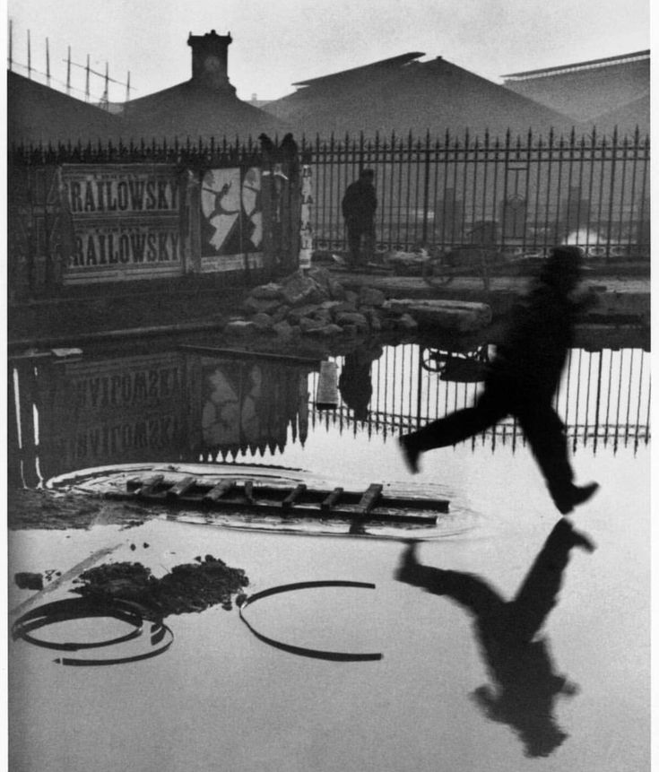
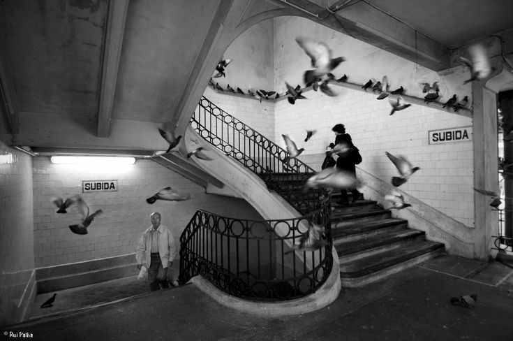
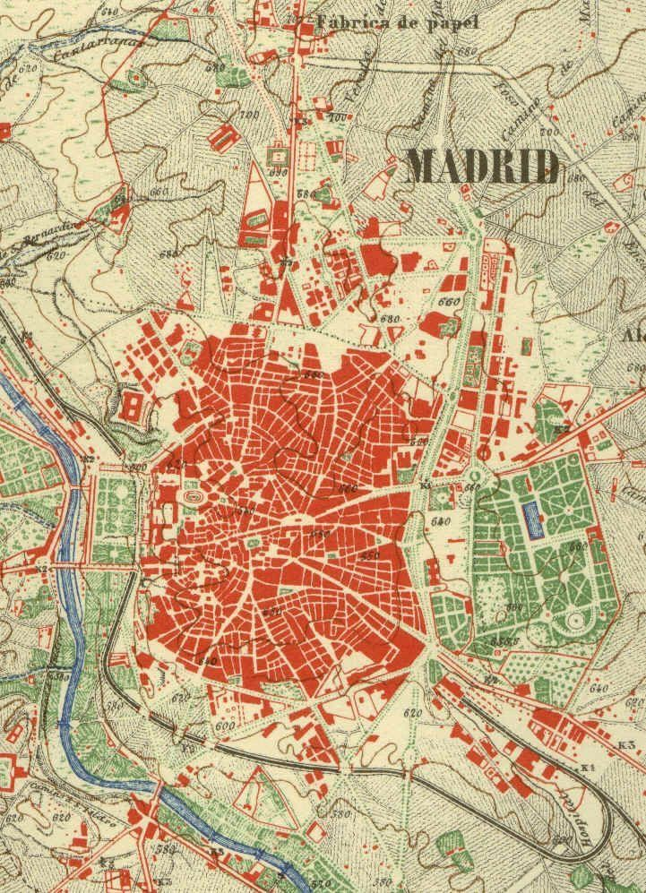
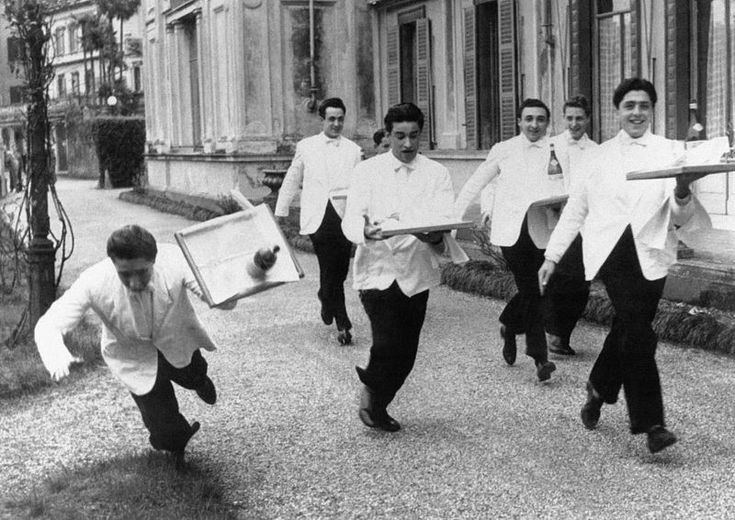
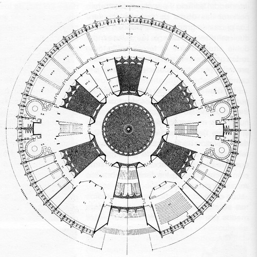
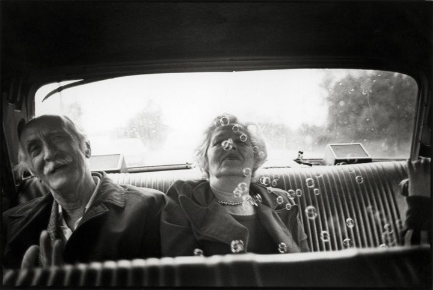
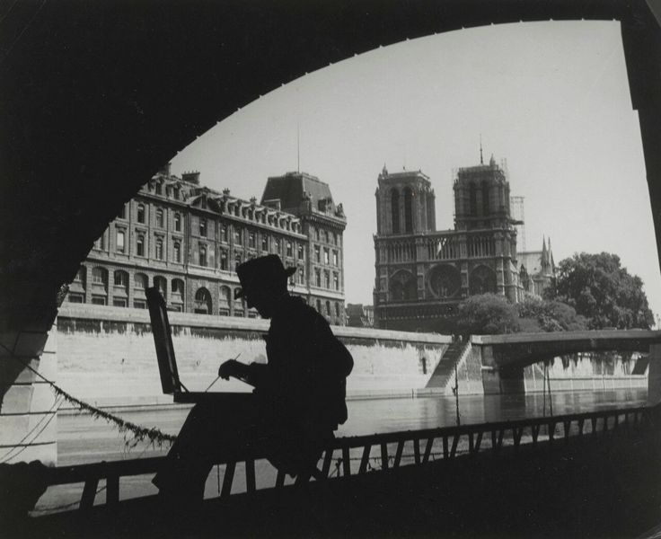
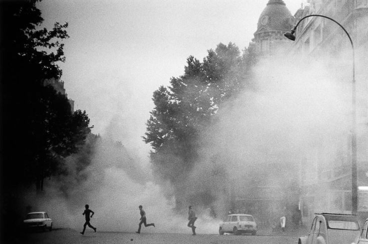
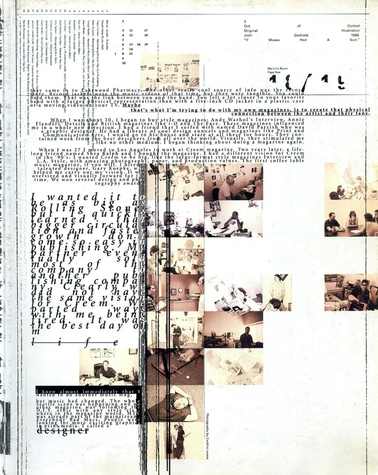
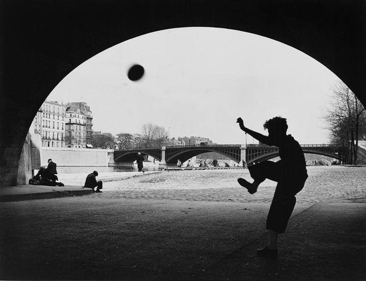
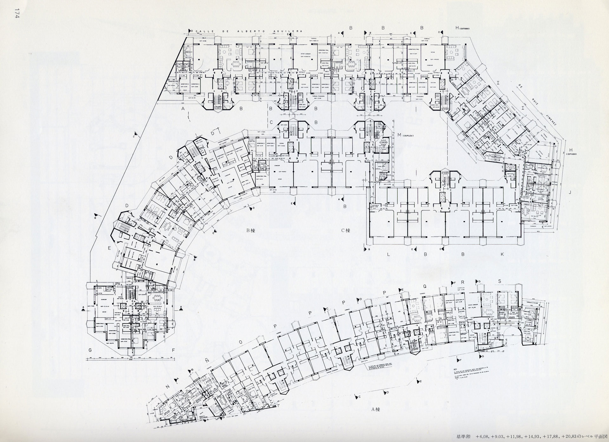
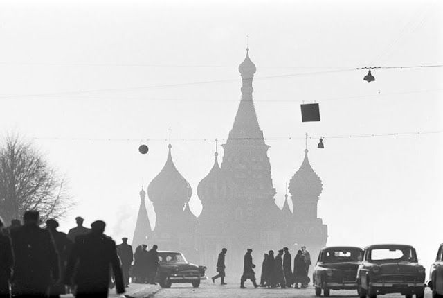
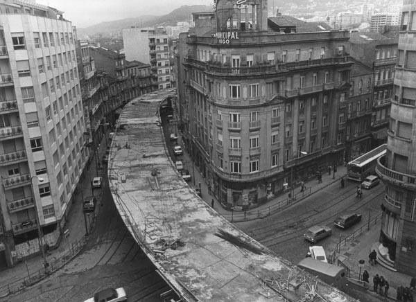
Introducida por la maravillosa primera escena de La Dolce Vita de Federico Fellini, Paris, Taxes no busca nada más que ser un diario personal, un archivo de pensamientos y reflexiones alejado de la crueldad con la que el genio italiano representaba el periodismo en su obra de 1960.